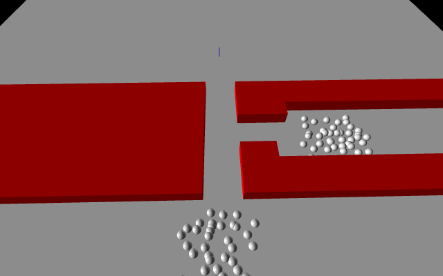

Pedestrian Simulation
The pedestrian simulation is a Python project done with the VPython library that simulates the movement of pedestrians in an environment with obstacles. Pedestrians move using a gradient descent cost function that use a series of cost functions from various sources.
As a box cannot not be covered accurately by a radius without unwanted behaviour, my solution was to place the origin for the cost function at the point nearest to the pedestrian on the box. The point is found by getting the angle between the axis vector of the box and the distance vector between the pedestrian and the box. Using the angle, we get the x or y displacement from the center and get the other displacement as half of the width or length based on the box quadrant the point falls in. Once we get the local coordinates of the point we apply a transformation that rotates and translates the point to global coordinates, which we use as the origin of the cost function.
An obstacle can be either a cylinder, a box, or another pedestrian. The cost generated by an obstacle is centered on a point and uses the function ln(R/d) when d < R where R is a given radius from the center and d is the distance from the pedestrian and the obstacle. Cylinders and pedestrians use their own center position as the origin for the cost function, however boxes use a different method of finding the origin for the cost function.
I ran the simulation with two environments, the first being a doorway with an obstacle in front and the second being a T-intersection (see GIFs above). If you want to see more about the project, please visit the repository on my GitHub.